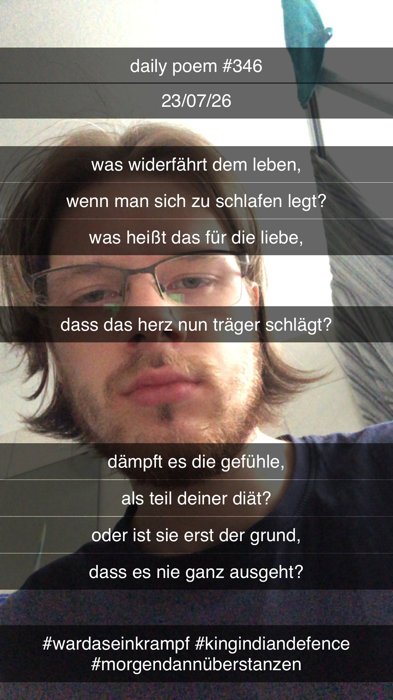

Fragen zu Leben und Liebe
[346]Was widerfährt dem Leben,
Wenn man sich zu schlafen legt?
Was heißt das für die Liebe,
Dass das Herz nun träger schlägt?
Dämpft es die Gefühle –
Als Teil deiner Diät?
Oder ist sie erst der Grund,
Dass es nie ganz ausgeht?
